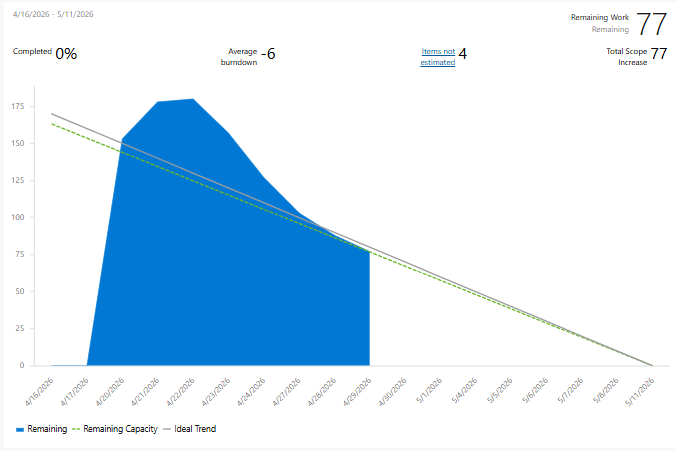
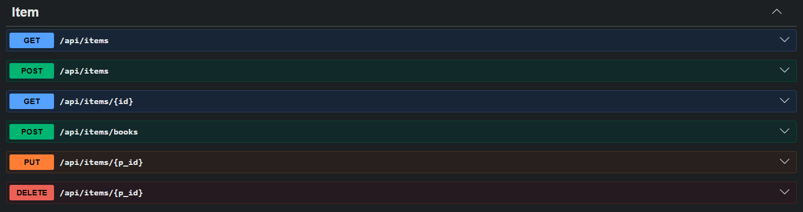
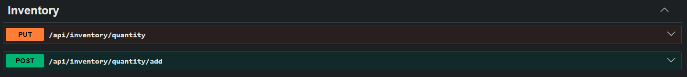

Revue du Sprint 2
Antony Burlet
Billy Hallé
William Peck
Nicolas Michaud
Bien commencer
Rendre notre application utilisable :

Rôle : Dev Backend
Rendre la gestion des items fonctionnelle via l’API

Consultation des produits disponibles.

Gestion des quantités et des données d’inventaire.
Une grande amélioration par rapport au Sprint 1. Une itération très technique qui a prouvé la robustesse de notre architecture.
Période de questions ?